Мовний компас · № 49–60
Дієприкметник
Учнівських аркушів: 12 · Матеріалів для вчителя: 2. Оригінальні PNG для друку.
Архів міститиме аркуші для учнів і наявні матеріали для вчителя. Дочекайтеся завершення підготовки.
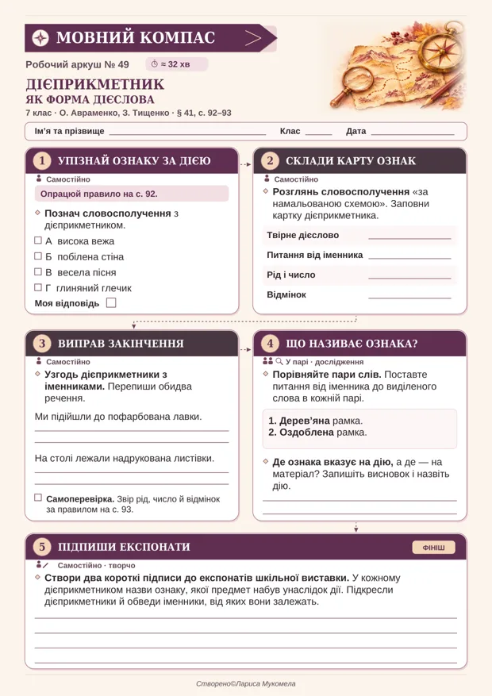
Аркуш № 49 · 7 класДієприкметник як форма дієслова
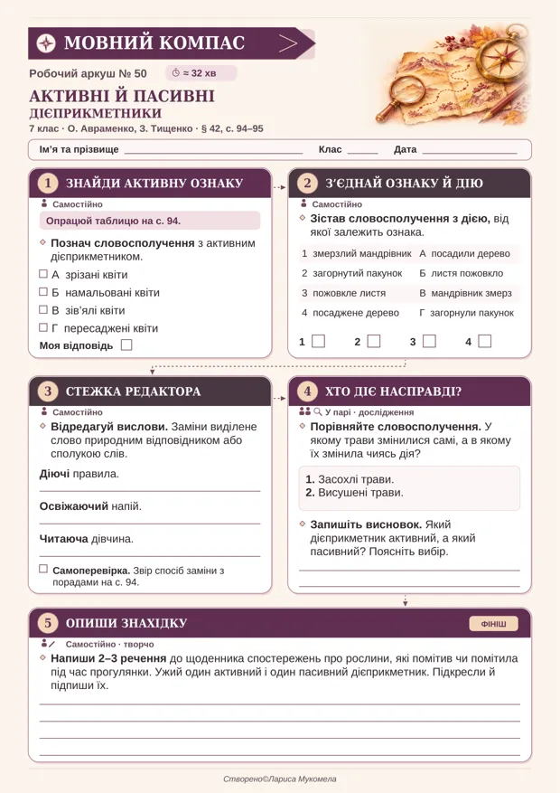
Аркуш № 50 · 7 класАктивні й пасивні дієприкметники
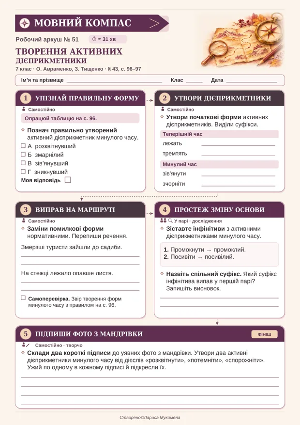
Аркуш № 51 · 7 класТворення активних дієприкметників
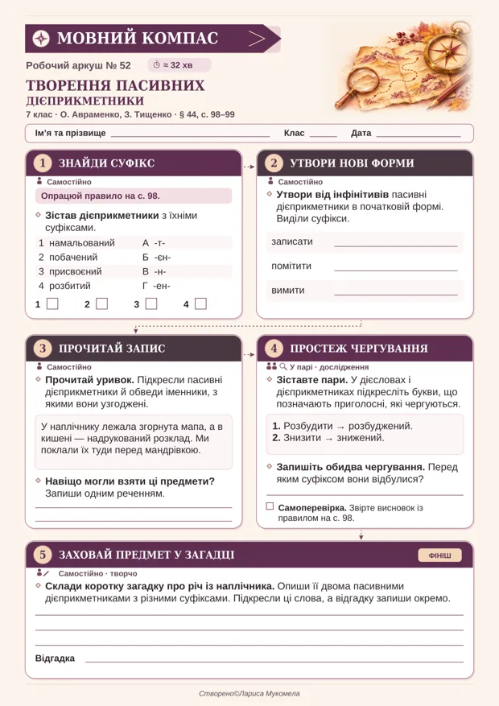
Аркуш № 52 · 7 класТворення пасивних дієприкметників
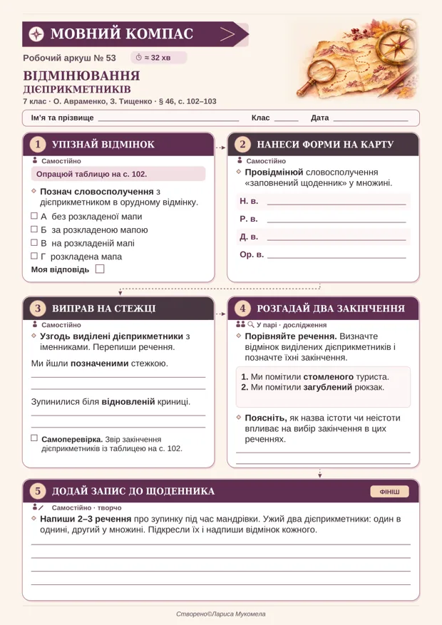
Аркуш № 53 · 7 класВідмінювання дієприкметників
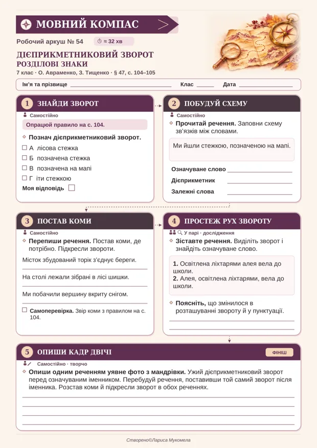
Аркуш № 54 · 7 класДієприкметниковий зворот. Розділові знаки
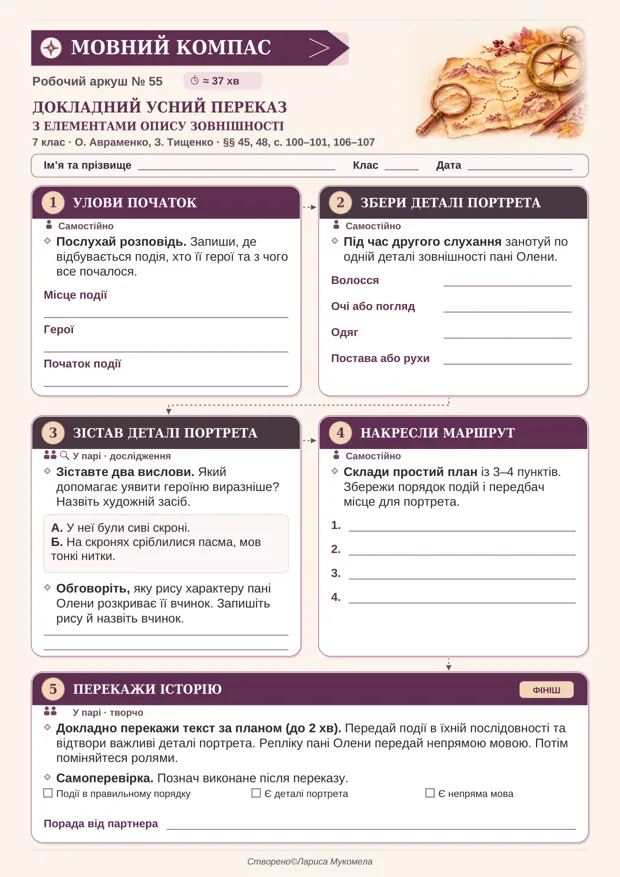
Аркуш № 55 · 7 класДокладний усний переказ з елементами опису зовнішності
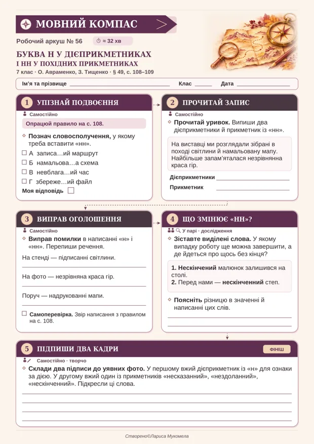
Аркуш № 56 · 7 класБуква н у дієприкметниках і нн у похідних прикметниках
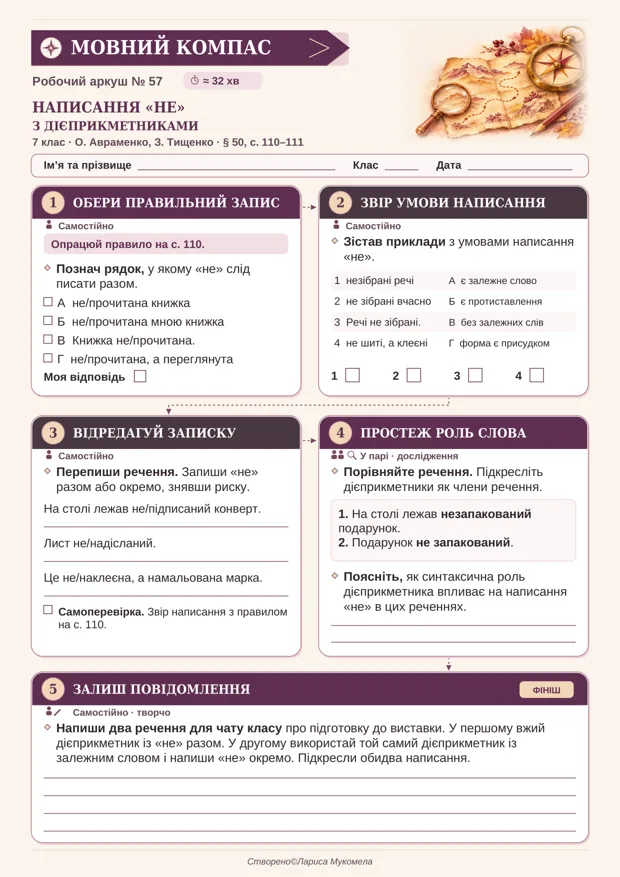
Аркуш № 57 · 7 класНаписання не з дієприкметниками
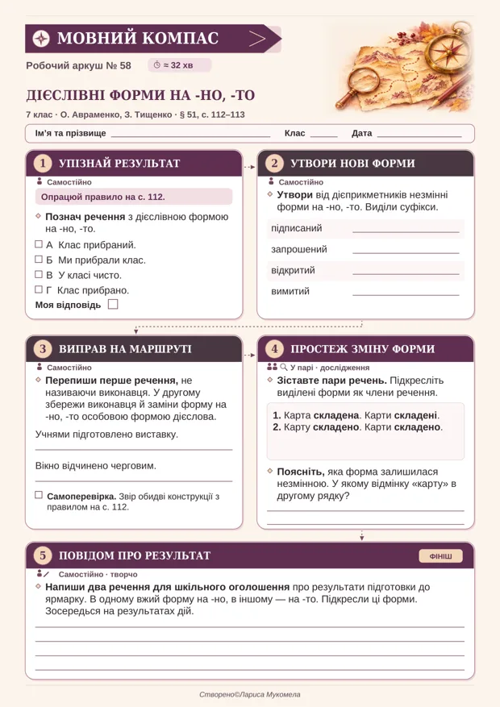
Аркуш № 58 · 7 класДієслівні форми на -но, -то
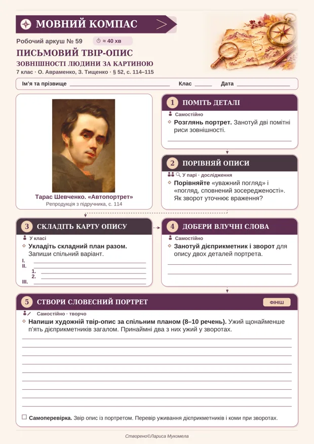
Аркуш № 59 · 7 класПисьмовий твір-опис зовнішності людини за картиною
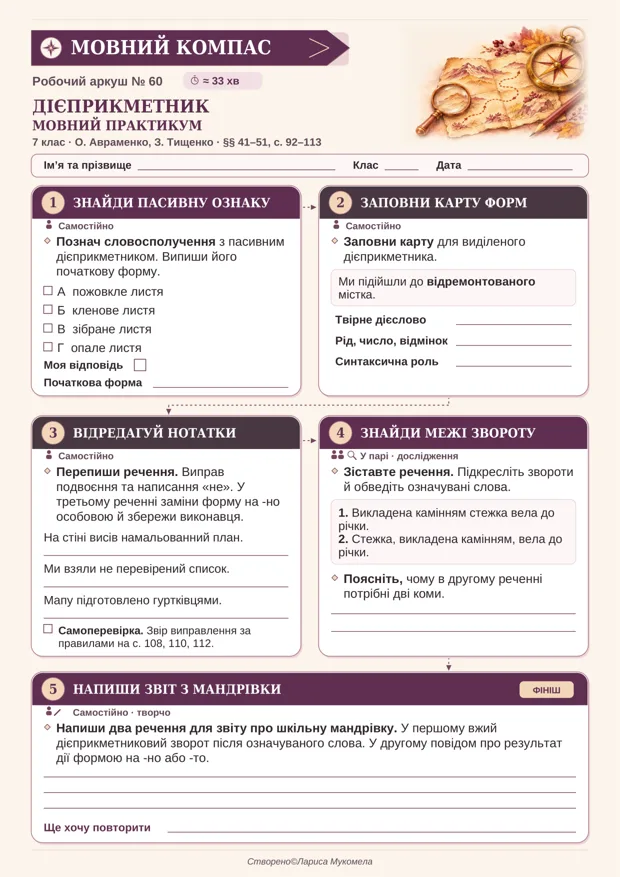
Аркуш № 60 · 7 класДієприкметник. Мовний практикум